Data Visualisation
We now wish to learn about data visualisation. Data visualisation is a crucial part of any statistical enquiry. It allows to better understand the data by means of graphical exploration. In this laboratory, we are going to rely on R for Data Science, a book by Hadley Wickham and Garrett Grolemund.
The first thing we ought to do is to load the library we will use.
library(ggplot2)
library(dplyr)##
## Attaching package: 'dplyr'## The following objects are masked from 'package:stats':
##
## filter, lag## The following objects are masked from 'package:base':
##
## intersect, setdiff, setequal, unionThe mpg data frame
We want to understand whether cars with big engines consume more fuels with respect to cars with smaller engines. What do you think?
The data
We are going to use a data frame containing information for 38 models of car, created by the US Environmental Protection Agency. The data frame is already contained in ggplot2. It is a package that allows for visualising data in an elegant and structured fashion. Let us give a closer look at the data.
# type mpg and analyse the outputA first look
Amongst the column of the mpg data frame, we are interested in two: displ, the engine size in litres, and hwy, the car’s fuel efficiency on a highway (in miles per gallon). Let us plot the data.
ggplot(data = mpg) +
geom_point(mapping = aes(x = displ, y = hwy))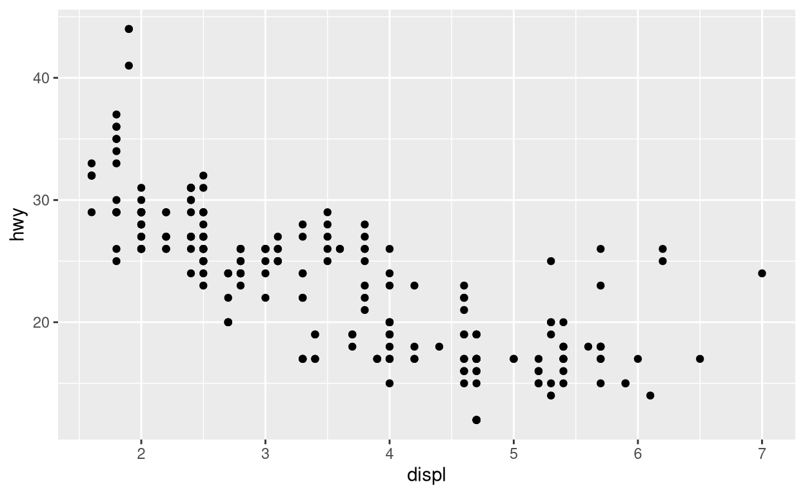
What do we see?
There seems to be a negative correlation between the engine size and the fuel efficiency, at least after a first look. This plot is called a scatterplot: values for two variables are displayed on the x and y axes.
How did we do it?
ggplot(data = mpg) +
geom_point(mapping = aes(x = displ, y = hwy))- We have created a plot by calling the function
ggplot(). Setting the argumentdata = mpgtold ggplot about the data we want to use. This function creates an empty coordinate system. - We have then added a layer of points by adding
geom_point.geom_pointis a particular type ofgeom. Everygeomhas amappingargument. This is paired withaes. Arguments ofaesis to tell where on the axes we want to put variables.
A graphing template
The generic syntax to make a plot is then the following:
ggplot(data = <DATA>) +
<GEOM_FUNCTION>(mapping = aes(<MAPPINGS>))Exercises
Runggplot(data = mpg). What happens?
ggplot(data = mpg)mpghwy vs cyl (the number of cylinders).
ggplot(data = mpg) +
geom_point(mapping = aes(x = hwy, y = cyl))class (the “type” of car) and drv. Why is it not useful?
ggplot(data = mpg) +
geom_point(mapping = aes(x = class, y = drv))Aesthetic Mappings
There appears to be a bunch of points in the bottom right corner that do not seem to follow the trend. What may be the reason? Maybe the better efficiency is because those cars are hybrid? Let us find out! To gain more insight regarding why this may happen, we exploit the mappings of the plot. We map the class of the cars to a colour.
ggplot(data = mpg) +
geom_point(mapping = aes(x = displ, y = hwy, color = class))
These cars are “2seater”. It makes sense: sports car have smaller bodies and gain in efficiency. With hindsight, it was unlikely for hybrid cars to have bigger engines. (Notice that if you prefer to use British English, you can also type colour.)
Other mappings
We can map the class variable in other ways. For instance, we can map it to size.
ggplot(data = mpg) +
geom_point(mapping = aes(x = displ, y = hwy, size = class))## Warning: Using size for a discrete variable is not advised.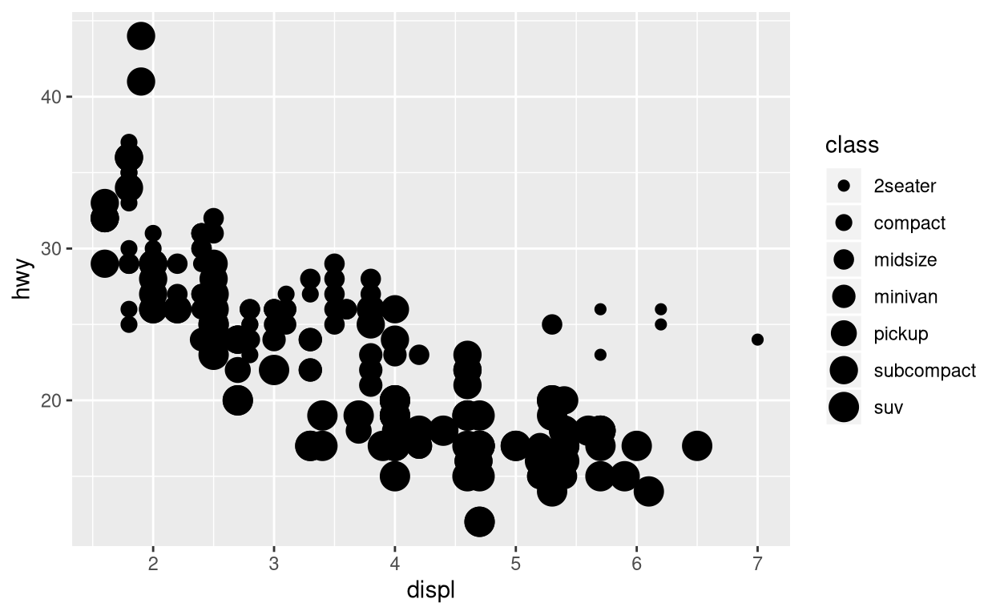 Notice the warning message! We are mapping a discrete variable to a continuous mapping and this is not advised.
Another possibility is to use different shapes.
ggplot(data = mpg) +
geom_point(mapping = aes(x = displ, y = hwy, shape = class))## Warning: The shape palette can deal with a maximum of 6 discrete values because
## more than 6 becomes difficult to discriminate; you have 7. Consider
## specifying shapes manually if you must have them.## Warning: Removed 62 rows containing missing values (geom_point).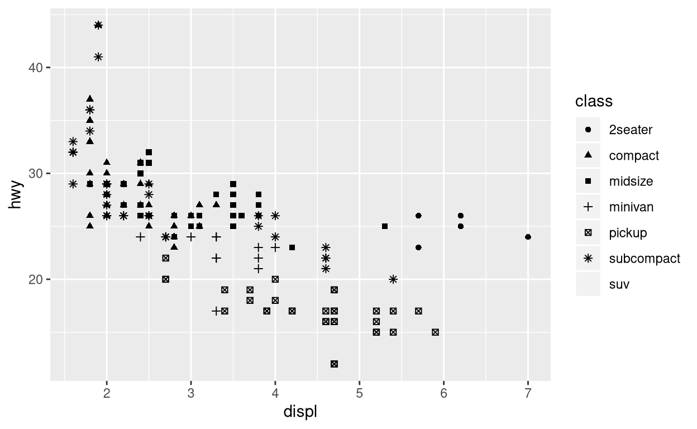 We see that “suv” vehicles are not displayed. ggplot handles at most six shapes.
A third option would be that to map it to the alpha aesthetic. alpha regulates the transparency of the points.
ggplot(data = mpg) +
geom_point(mapping = aes(x = displ, y = hwy, alpha = class))## Warning: Using alpha for a discrete variable is not advised.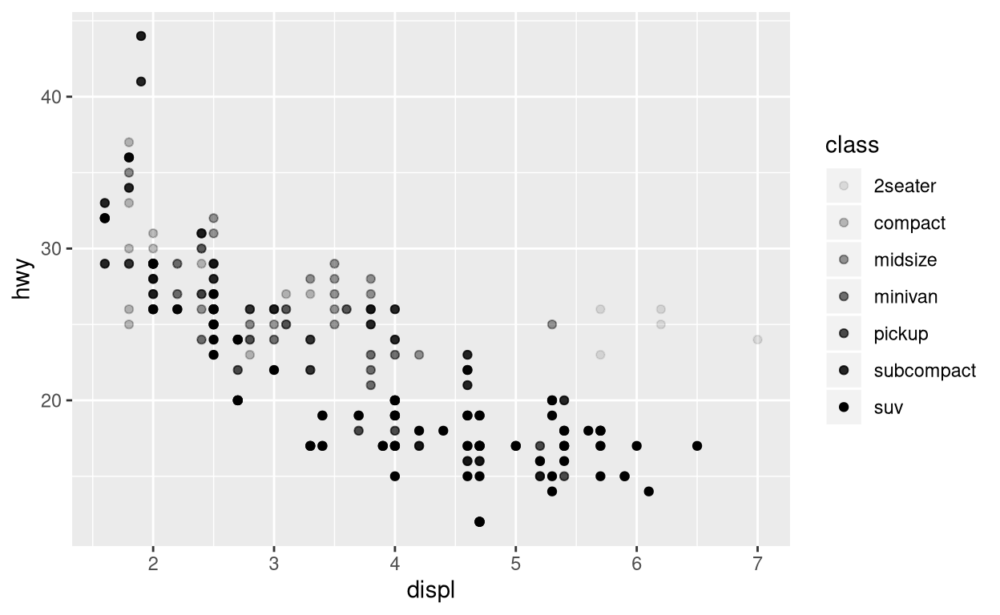 Notice that we obtain a similar warning to the one we had for size.
Customising the output
If we simply wish to change the output, regardless of the points, we can do something like the following.
ggplot(data = mpg) +
geom_point(mapping = aes(x = displ, y = hwy), colour = "blue", alpha = 0.8)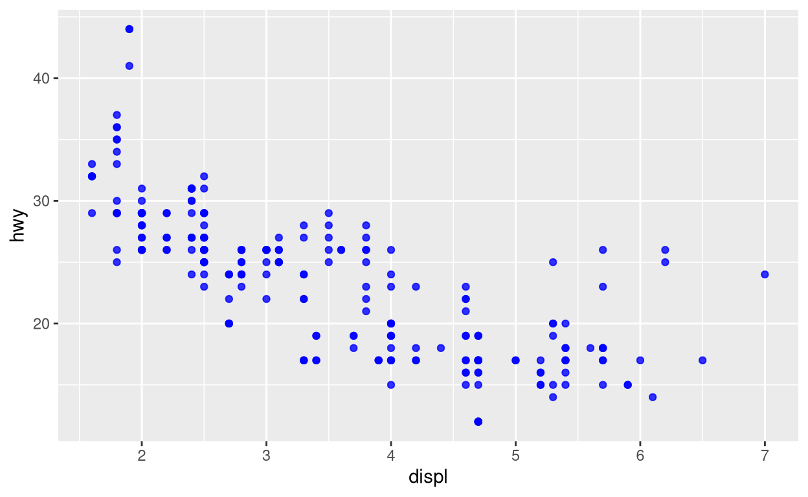 Notice how some points are more transparent than others. It is because the colour becomes more intense if two or more points overlap.
What is wrong with this plot? Fix it so that the output has the same colour.ggplot(data = mpg) +
geom_point(mapping = aes(x = displ, y = hwy, color = "blue"))ggplot(data = mpg) +
geom_point(mapping = aes(x = displ, y = hwy), color = "blue")Facets
We can add more variables by combining different aesthetics. If a variables in the data frame is discrete, we can split the plots into facets.
To do this, we add a layer called facet_wrap.
ggplot(data = mpg) +
geom_point(mapping = aes(x = displ, y = hwy)) +
facet_wrap(~ class, nrow = 2)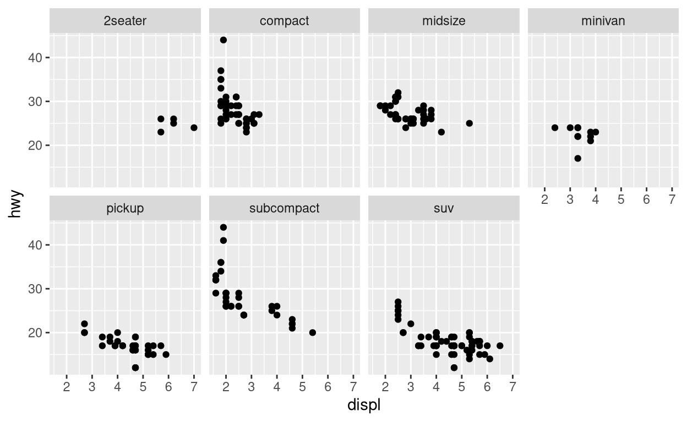 The argument of facet_wrap is called a formula (~ class). This is not to be confused with a formula in the mathematical sense; it is a data structure of R.
If we wish to facet the plot according to two variables, we can use the facet_grid function in a similar way. We can decompose according to drv (f is front-wheel, r is rear-wheel and 4 is 4wd) and cyl is the number of cylinders.
ggplot(data = mpg) +
geom_point(mapping = aes(x = displ, y = hwy)) +
facet_grid(drv ~ cyl)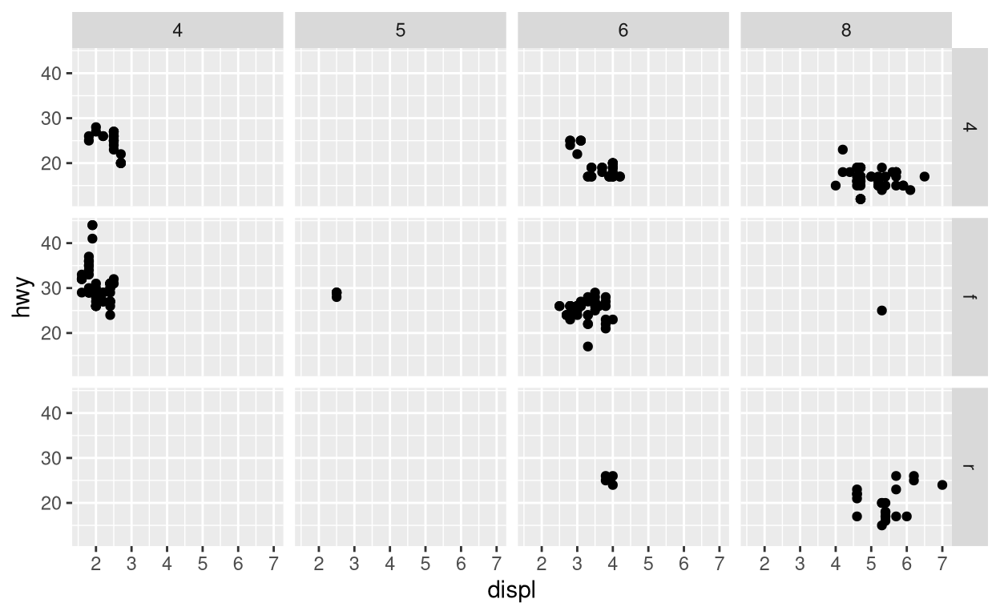
What happens if you facet considering a variable with continuous values?.?
ggplot(data = mpg) +
geom_point(mapping = aes(x = displ, y = hwy)) +
facet_grid(drv ~ .)
ggplot(data = mpg) +
geom_point(mapping = aes(x = displ, y = hwy)) +
facet_grid(. ~ cyl)Geometric Objects
Take a look at the following plots.
ggplot(data = mpg) +
geom_point(mapping = aes(x = displ, y = hwy))ggplot(data = mpg) +
geom_smooth(mapping = aes(x = displ, y = hwy))## `geom_smooth()` using method = 'loess' and formula 'y ~ x'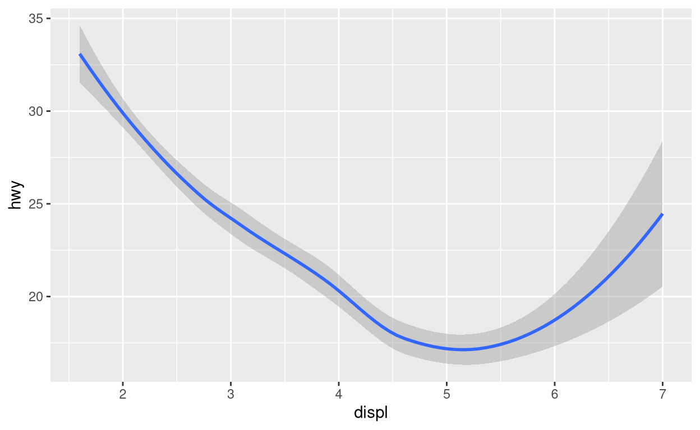 These plots use the same data and the same variables. The difference is given by the different choice of geom layers. A geom is, in facts, a geometrical object employed for the representation of the data. Every geom takes as input a mapping argument. Not every aesthetic, however, is compatible with every geom. For instance, there is no such thing as the shape of a line. Yet, we can define a linetype
ggplot(data = mpg) +
geom_smooth(mapping = aes(x = displ, y = hwy, linetype = drv))## `geom_smooth()` using method = 'loess' and formula 'y ~ x'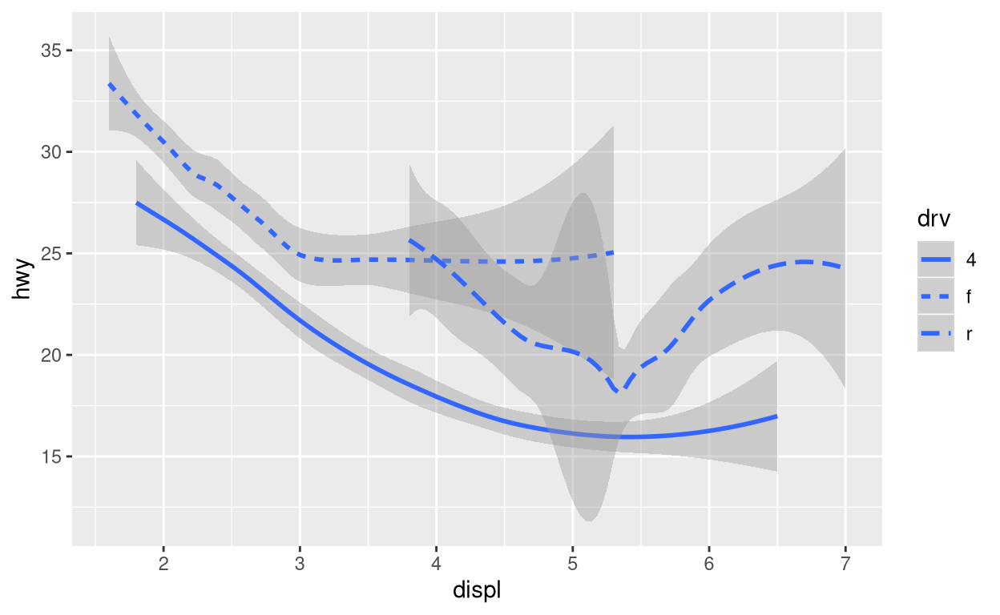 In this case, we have three different smoothed lines, obtained by separating the different classes. If this sounds strange, let us superpose the plots and add some colours.
ggplot(data = mpg) +
geom_smooth(mapping = aes(x = displ, y = hwy, linetype = drv, colour = drv)) +
geom_point(mapping = aes(x = displ, y = hwy, linetype = drv, colour = drv))## Warning: Ignoring unknown aesthetics: linetype## `geom_smooth()` using method = 'loess' and formula 'y ~ x'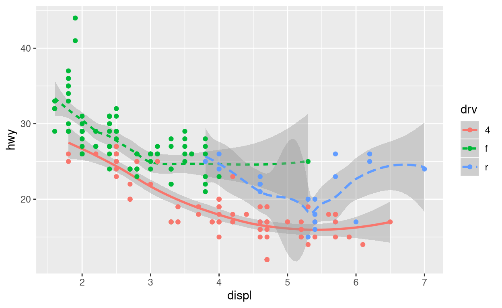
More on geometric objects
There are more than thirty geometric objects in the base ggplot2 package and many more extensions have been created. A cheatsheet is available to guide you in the process!
Combining different geometric objects
We notice, however, that we had to duplicate the code:
ggplot(data = mpg) +
geom_smooth(mapping = aes(x = displ, y = hwy, linetype = drv, colour = drv)) +
geom_point(mapping = aes(x = displ, y = hwy, linetype = drv, colour = drv))We can avoid this by telling ggplot that we want it to push the arguments to the following geoms as follows:
ggplot(data = mpg, mapping = aes(x = displ, y = hwy, colour = drv)) +
geom_smooth(mapping = aes(linetype = drv)) +
geom_point()## `geom_smooth()` using method = 'loess' and formula 'y ~ x'The same idea works backward. If we wish to only draw a line for the “midsize” cars, we can do the following.
ggplot(data = mpg, mapping = aes(x = displ, y = hwy)) +
geom_point(mapping = aes(colour = drv)) +
geom_smooth(data = filter(mpg, class == "midsize"), se = FALSE)## `geom_smooth()` using method = 'loess' and formula 'y ~ x'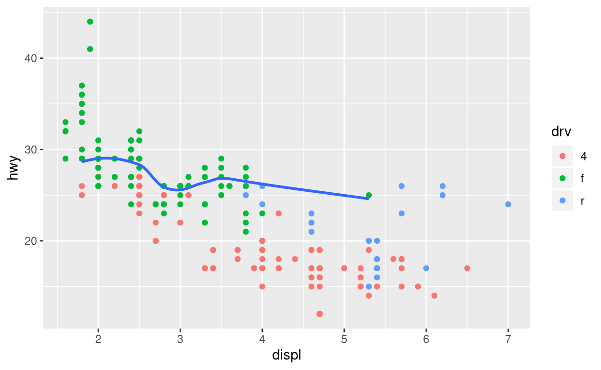
Do you think these graphs will differ?ggplot(data = mpg, mapping = aes(x = displ, y = hwy)) +
geom_point() +
geom_smooth()
ggplot() +
geom_point(data = mpg, mapping = aes(x = displ, y = hwy)) +
geom_smooth(data = mpg, mapping = aes(x = displ, y = hwy))Conclusions
Congratulations! You have made your first steps in the amazing field of data visualisation. If you want to learn more, check the ggplot2 website.ggplot2 is widely employed. Next time you read some news on the BBC® website, you may want to take a closer look…